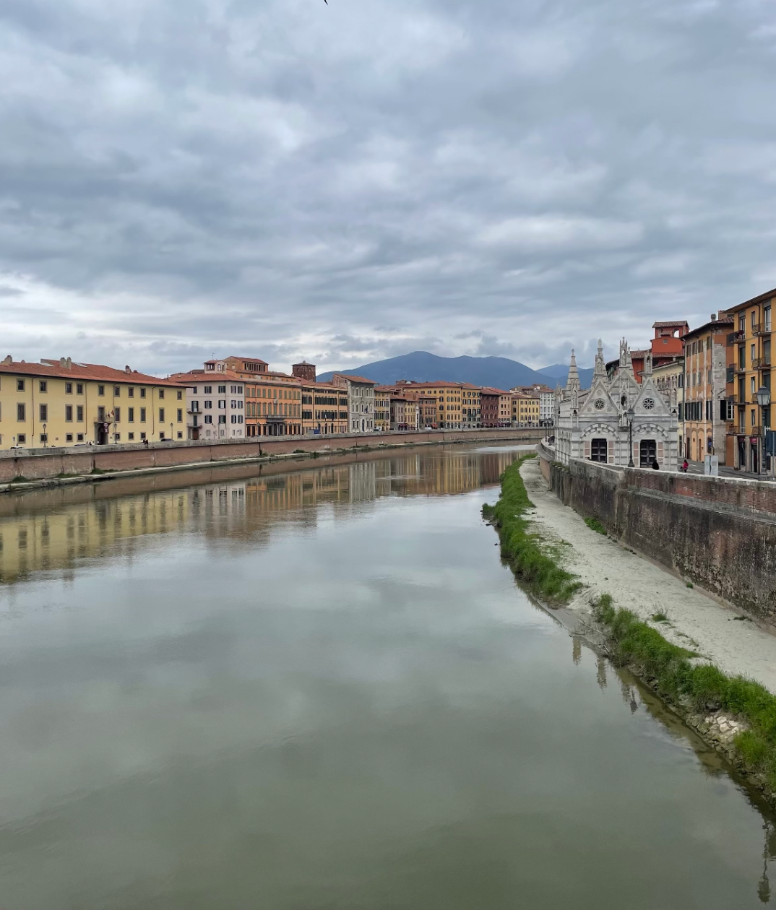
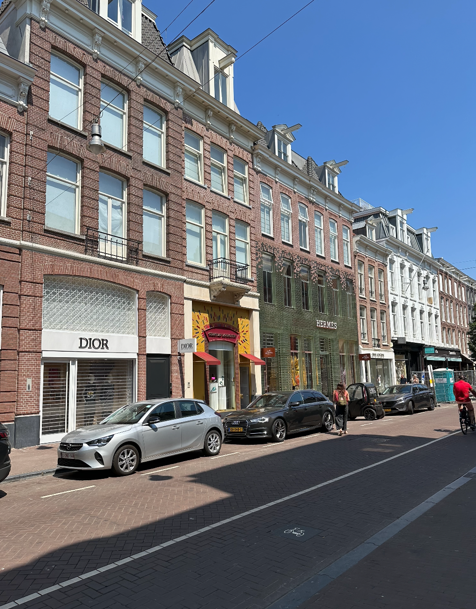
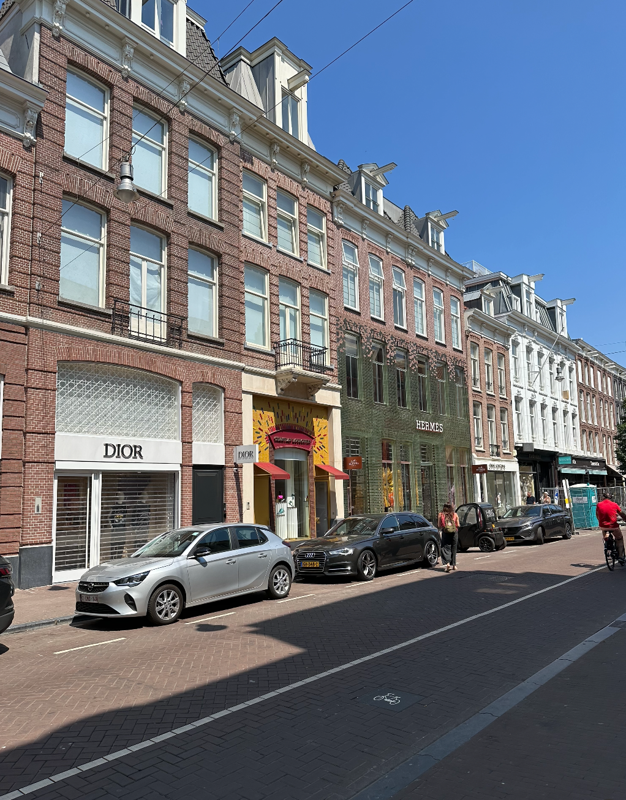

Both Day and Weekend Trips Below:

During my trip abroad I had the opportunity to travel around the country of Italy and a trip outside of the country. At other times in my life I had the privelage of taking other trips around Europe and thought I might as well share my reviews on them too. This page is designed to help you figure out where are easy places to go and how to get there. I want this page to emphasize traveling within Italy and how I was able to do it with ease, and with these tips, you can too!
Bologna, Italy: The city of Bologna is a beautiful spot to travel to and visit. With a less than an hour train ride that was taken from Florence I spent the day in Bologna where I got to walk around the city, shop, and watch some live shows and music that was going on around the town square. It had amazing restaurants ranging from Italian to Japanese cuisines and it is home of Bolognese, which was the most immaculate bowl of Bolognese I had ever eaten in my life. The city was small and quaint but had a lot of areas to do so much in the small city. This was an extremely easy travel experience and when I went I traveled on a Friday afternoon and was back by the nighttime and was able to see and od so much in a short amount of time.
Florence, Italy: I was so very lucky to be able to spend six weeks in my 20s in Florence, Italy. These six weeks flew by faster than I've ever experienced before and I find myself constantly looking back in time at the photos and memories from my time there. The city was extremely easy to navigate and walk around in and every day there was something new to do for me. Whether it was going to a window on the end of a street corner where they sold wine, to going to the Gucci Museum with a student discount of 8 euros for entry. The scenery around this city was adequate enough for me and if I never went inside any of these buildings I would have been just as satisfied because of the outside architecture. I traveled around the city by walking, taxis, and even electric scooters and bikes, but watch out for all those cobblestone streets because you'll be in for some bumpy rides!

Pisa, Italy: Pisa may be known for the leaning tower, but there is so much more to it. The city was beautiful and had an amazing area to shop and buy souveniers. There was a pass I had bought that was not too pricy and I was able to then go into all of the buildings around the leaning tower, like the Museum or the Cathedral or the Balisca that had such beautiful art everywhere. If you are smart enough to buy tickets in advance you can book tickets to walk up the leaning tower as well. The city had great restaurants and places all around the city to shop.
Tuscany, Italy: Tuscany is the region in Italy that I was primarily in throughout my time studying abroad. The region's capitol is Florence and there are many beautiful cities are within it. In Tuscany you can choose from vineyards, to wineries and beautiful sights like the house that Mona Lisa actually lived in.

Livorno, Italy: To go to Livorno Beach from Florence we took a train to a city close by then a taxi to finish off the trip to get there. There were beach chairs and umbrellas for rent and lots of space to lay out in the sand. We got sandwiches from a nearby restaurant and there was food and drinks available on the beach itself. It was definitely a hidden gem of Italy because there was only locals there when we went. It was a quiet and chill day for the hectic trip I was having which was very relaxing. It was also very close to Pisa, Italy, so we took a taxi there to get dinner before taking a train back to Florence.
Venice, Italy: To get to Venice, I took a train from Florence which was about 2 hours long. There were round trip train tickets and there were a large amount of times to pick from within a similar price range of each other. You are able to pick from a range of different trains that also can have connections of trains with a chance of a lower price for getting there and back. I was able to book a Gondola ride in Venice where I had a 30 minute ride around the city with a guide who was very knowledgeable about the city. I learned the best way to minimize the cost of these trips is to book everything as early as possible.


Throughout traveling Italy, I learned that buying the train tickets far in advance were extremely helpful. For two of these weekend trips, Cinque Terre and the Amalfi Coast, I booked the tickets in advance and was able to not pay a super expensive fee. The train conductors were usually quite lenient when it comes to missing one train by a few minutes and letting you go on the next one without a fee. I bought my flight ticket to Barcelona well before my trip even started because that was one place I knew I wanted to go to during my time in Europe and it was the best weekend of my life. Everything was beautiful there as it is all over Europe and there were endless things to see and do. I went to a restaurant on the beach in Barcelona and was able to watch the beautiful sunset. For the weekend, I was able to get a train pass for 72 hours where you could use it as many times as you want and it was inexpensive. It was so worth it because we were able to take the train all over the common sightseeing spots including the stunning castle. For Cinque Terre and Barcelona, we were able to rent a boat and spend the day on the beautiful Mediterranean Sea. Cinque Terre is home to the beautiful Italian Riviera and colorful houses along the coast that it is known for. For my weekend on the Amalfi Coast we had to do a little extra planning than the other trips. There are no direct trains to the city of Amalfi, but there are some close by. We booked a train ticket to Sorrento where we stayed for one night, and the next day we took a 25 minute ferry to the city of Amalfi where we had lunch and spent the rest of the day shopping. We then took another stop to Positano and I can easily say it was even better than Amalfi. During the Summer, everywhere in Italy was a lot more packed than it would be at other times in the year but it was definitely worth it. For all three of these weekend trips I took, I booked Airbnb's which was so much easier than a hotel because it was cheaper to split between some friends and we wanted to eat out during our trips. In reality, from Florence, I could have done day trips for both Cinque Terre and the Amalfi Coast, but it would have been a lot of travel for one day and we only stayed one night in each place to space it out a bit.

 
